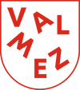

Vítejte v Ksychtíkově
Jmenuji se Michaela Podmolová a tvořím pod značkou Ksychtíkovo. Přináším barvy, fantazii a úsměvy na dětské tváře i tváře dospělých. Působím především ve Vsetíně, Valašském Meziříčí, Rožnově, Hranicích a Novém Jičíně.
Co nabízíme?
- 🎨 Malování na obličej – špičkové antialergenní barvy.
- 💇♀️ Pletení copů – boxerské copy s kanekalonem.
- 🎈 Tvarování balónků – zvířátka a meče pro každého.
- 👐 Smyslohraní – kreativní dílničky pro rozvoj dětí.
- 💎 Tvorba náramků – z minerálních kamenů a korálků.
Naše práce


Ceník služeb
Základní sazba: 1000 Kč / hodina
Doprava v okolí Valašského Meziříčí zdarma, dále dle domluvy.
Akce pro obce a veřejnost: Možnost domluvy malování s přímou platbou od rodičů na místě.
Naši partneři a kde malujeme
Je nám ctí spolupracovat s městy a organizacemi v našem regionu.

Valašské MeziříčíČlánky a rady pro vaši akci
✨ Bezpečnost a hygiena
Proč používáme jen certifikované barvy a jak čistíme štětce.
🎂 Perfektní oslava
Jak připravit prostor pro malování na narozeninové párty.
🏢 Akce pro firmy
Facepainting jako skvělý nástroj pro firemní Family Day.
💇♀️ Copy s kanekalonem
Vše o moderním pletení barevných boxerských copů.
👐 Svět smyslohraní
Proč jsou kreativní dílničky důležité pro rozvoj dětí.
🎨 Nejoblíbenější motivy
Co dnes u dětí vede? Od Spidermana po Elsu.
🎃 Halloweenská párty
Tipy na strašidelné masky a líčení pro dospělé i děti.
🔥 Pálení čarodějnic
Tradiční akce s barvami a magickou atmosférou.
🌍 Oslavy Dne Země
Jak propojujeme barvy s přírodou a ekologií.
👨🚒 Vesnické slavnosti
Jak na hasičské a obecní dny s Ksychtíkovem.
Co o nás píšete
„Děti byly nadšené! Malování vydrželo celý den a vypadalo úžasně. Moc děkujeme za skvělou atmosféru na naší oslavě.“
– Eva M., Vsetín ⭐⭐⭐⭐⭐„Míša je neskutečně šikovná a trpělivá. Copy s kanekalonem dcera nechtěla sundat týden. Doporučujeme všemi deseti!“
– Jana K., Valmez ⭐⭐⭐⭐⭐Časté dotazy
Kontaktujte nás
Michaela Podmolová
Lešná 169, 756 41
📞 Telefon: +420 728 500 091
📧 Email: podmolovam@gmail.com
IČO: 23249943
📅 Rezervovat termínSledujte nás na Facebooku